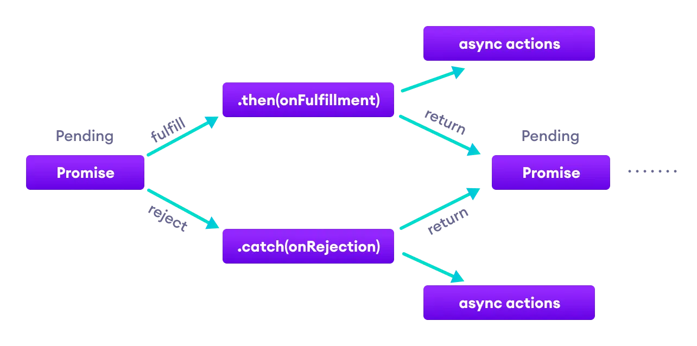

Hệ thống thiết kế
Một blog tốt không chỉ có nội dung hay mà còn cần giao diện rõ ràng, dễ đọc trên mọi thiết bị. Chúng ta xác định palette màu, font chữ, spacing và tạo grid để trình bày bài viết đẹp mắt.
Biến CSS và nền tảng style
:root {
--bg: #ffffff;
--text: #1f2937;
--muted:#6b7280;
--primary:#2d6cdf;
--border:#e5e7eb;
}
body { background: var(--bg); color: var(--text); }
a { color: var(--primary); }
.card { border:1px solid var(--border); border-radius:12px; }
Grid & responsive
.container { max-width: 1100px; margin: auto; padding: 0 20px; }
.posts-grid {
display: grid;
grid-template-columns: repeat(3, 1fr);
gap: 18px;
}
@media (max-width: 900px) {
.posts-grid { grid-template-columns: 1fr 1fr; }
}
@media (max-width: 640px) {
.posts-grid { grid-template-columns: 1fr; }
}
Mẹo readability
- Line-height 1.6–1.8 để dễ đọc
- Độ tương phản tốt cho text trên nền
- Khoảng cách (spacing) hợp lý giữa các section